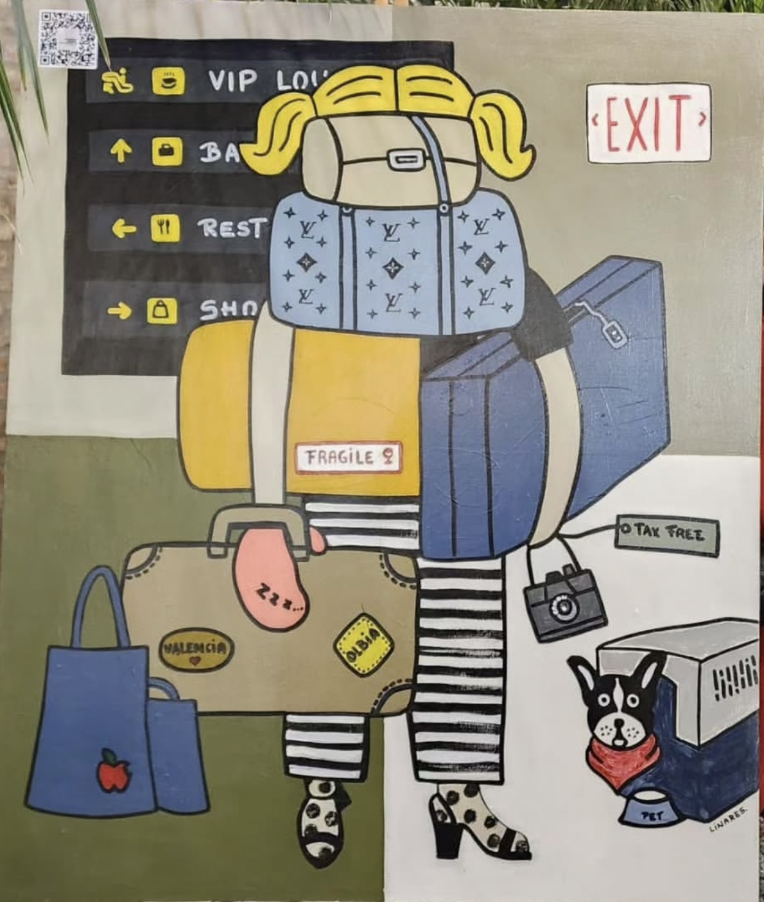
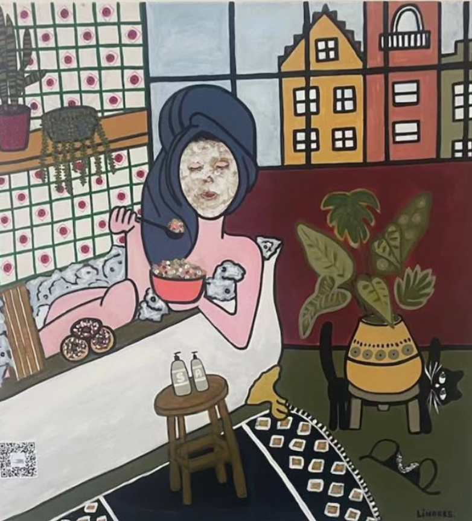
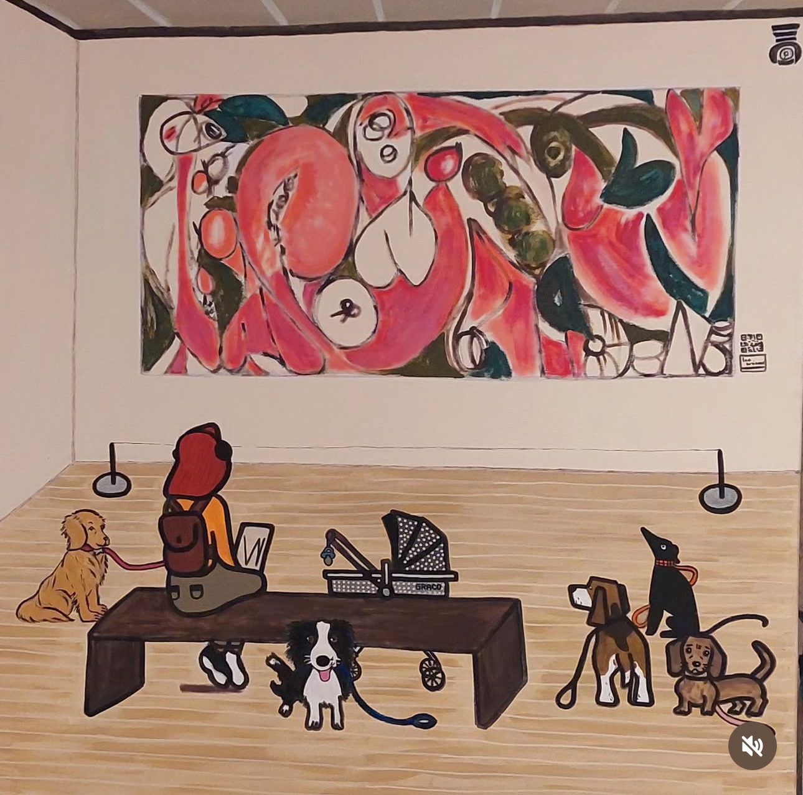
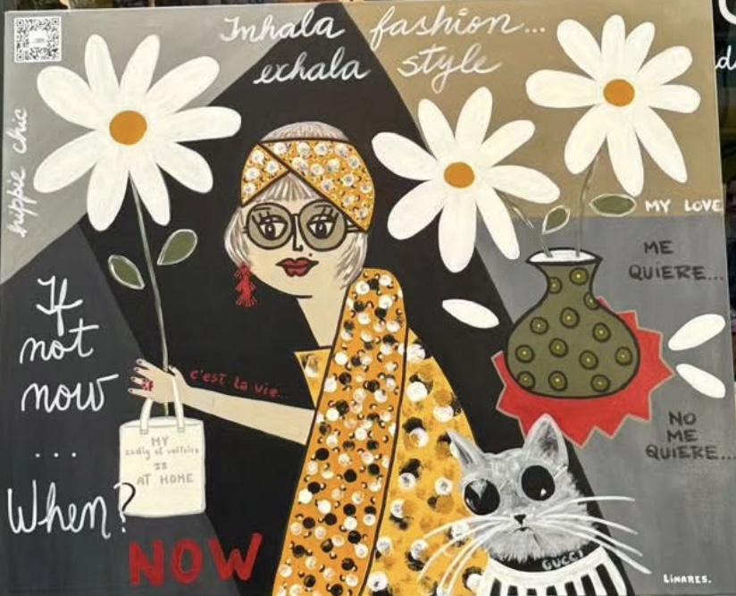
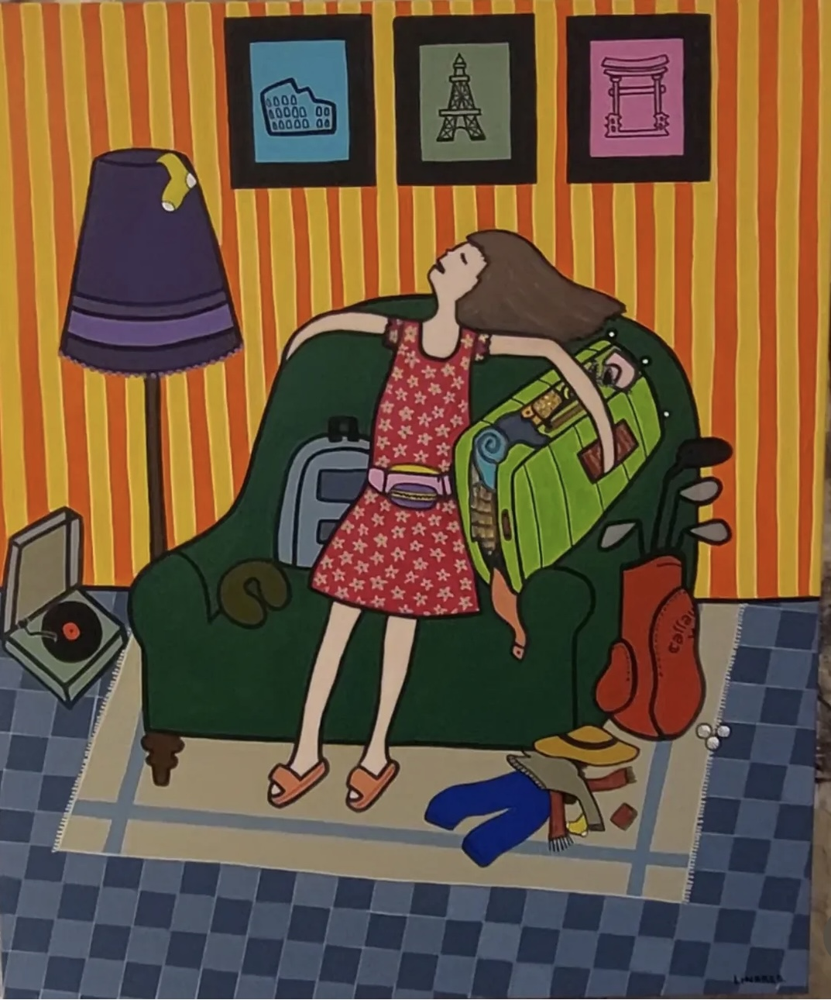

Un recorrido visual por mis obras
Cada obra representa un proceso de exploración, donde las formas y los materiales dialogan hasta encontrar un equilibrio propio.




En el detalle se esconde la esencia de mi trabajo: la búsqueda de emociones a través de la armonía entre espacio, luz y textura.

Este recorrido visual es también un reflejo de mi manera de entender el arte y el diseño, como un puente entre lo cotidiano y lo extraordinario.


